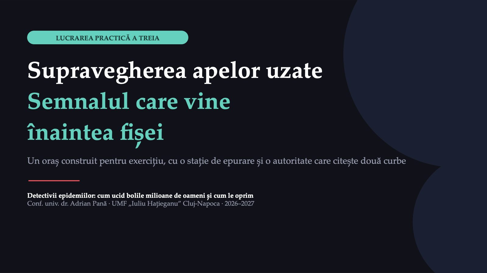
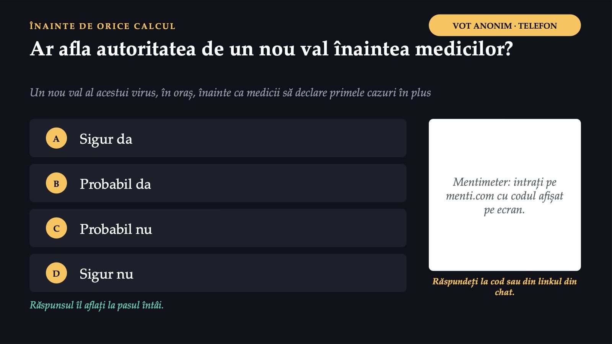
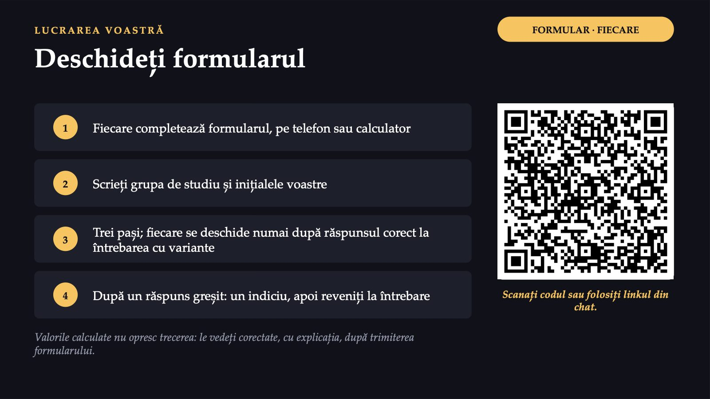
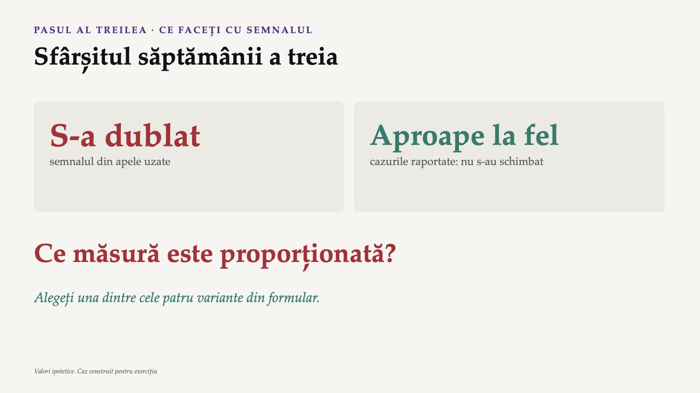
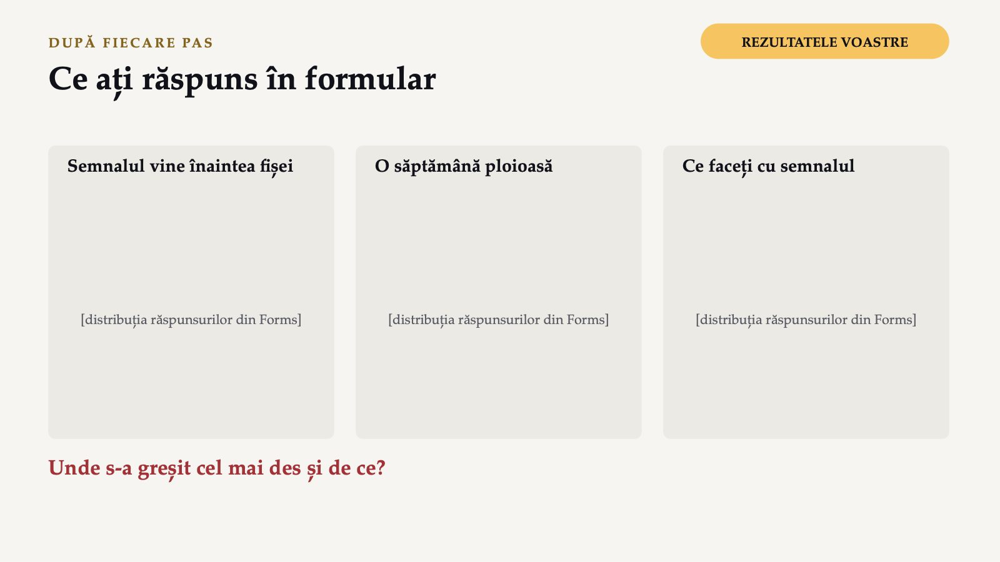
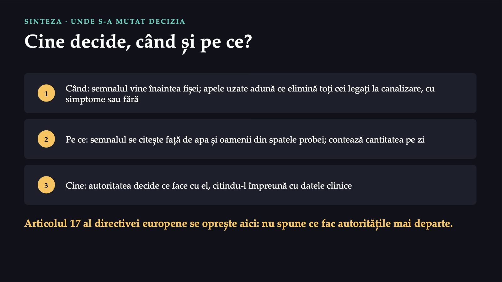
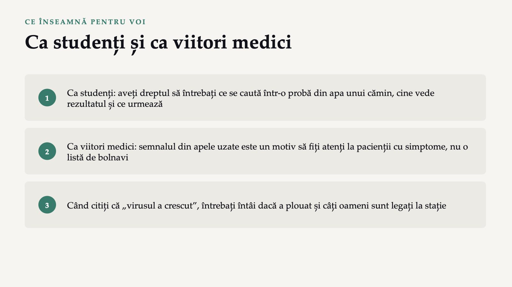
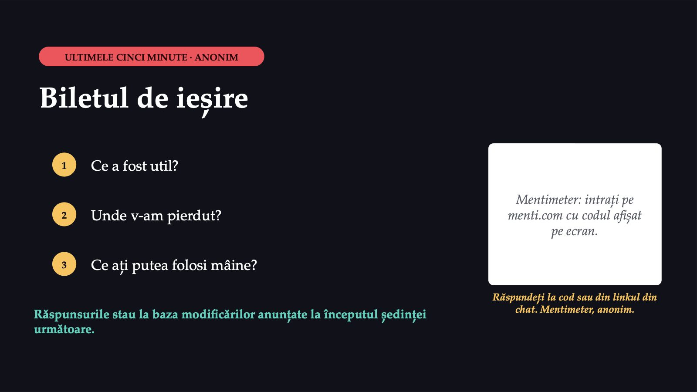

Supravegherea apelor uzate

1 / 16Lucrarea practică a treia, pe care o facem pe Teams, continuă cursul: aceeași întrebare, pusă de data aceasta de voi. Dacă semnalul din apele uzate vine înaintea fișei de declarare, cine decide, când și pe ce? Azi porniți din capătul celălalt al supravegherii: de la ce ajunge în canalizare, unde intră și cei care nu au văzut niciodată un medic.
Un oraș cu o singură stație de epurare
![CAZ CONSTRUIT PENTRU EXERCIȚIU · OCTOMBRIE Un oraș cu o singură stație de epurare Stația de epurare De două ori pe săptămână, o probă din apa care intră în stație, pe 24 de ore. Un laborator măsoară un virus respirator. Rezultatele ajung la autoritatea de sănătate publică. Fișele de declarare Autoritatea primește și fișele cazurilor confirmate prin test. La începutul lui octombrie, ambele cifre sunt mici și stabile. Echipa care citește cele două curbe sunteți voi. Caz construit: orașul, stația și cifrele sunt inventate; cazul nu numește virusul](diapozitive/LP03/002.jpg) 2 / 16
2 / 16Cazul este construit pentru exercițiu: orașul, stația, oamenii și cifrele sunt inventate, iar cazul nu numește virusul, ca să nu confundați cifrele cu datele unei boli reale. Un oraș universitar are o singură stație de epurare, la care ajung apele uzate ale aproape tuturor locuitorilor. De două ori pe săptămână, operatorul stației ia o probă din apa care intră în stație, adunată pe parcursul a 24 de ore, iar un laborator măsoară în ea materialul genetic al unui virus respirator. Rezultatele ajung la autoritatea de sănătate publică a județului. Tot acolo ajung, ca de obicei, fișele de declarare ale cazurilor confirmate prin test. La începutul lui octombrie, ambele cifre sunt mici și stabile. Echipa care citește săptămânal cele două curbe sunteți voi.
Ar afla autoritatea de un nou val înaintea medicilor?

3 / 16Înainte de orice calcul, un vot anonim pe Mentimeter: ar putea afla autoritatea de un nou val al acestui virus în oraș înainte ca medicii să declare primele cazuri în plus? Intrați cu codul de pe ecran sau din linkul pus în chat și alegeți una dintre cele patru variante. Ne întoarcem la acest vot la sfârșitul lucrării.
Deschideți formularul

4 / 16Lucrarea voastră se face într-un formular Microsoft Forms. Pe Teams, fiecare îl completează pe cont propriu, de pe telefon sau de pe calculator: scanați codul de pe ecran sau deschideți linkul din chat. La prima întrebare scrieți grupa de studiu și inițialele voastre. Formularul conține cazul și primii trei pași. Fiecare pas se deschide numai după ce alegeți varianta potrivită la întrebarea cu variante a pasului dinainte; după o alegere greșită primiți un indiciu și reveniți la întrebare. Valorile pe care le calculați nu opresc trecerea mai departe: le vedeți corectate, cu explicația, după trimiterea formularului. Formularul nu intră în notă. Dacă ceva nu este clar, scrieți în chat.
Două curbe, aceleași șase săptămâni
 5 / 16
5 / 16Pasul întâi: două curbe, aceleași șase săptămâni. Cazurile raportate parcurg toată piramida supravegherii, pe care ați întâlnit-o la cursul al treilea: omul se îmbolnăvește, merge la medic, face un test, testul iese pozitiv, cazul este declarat. Apele uzate nu așteaptă niciuna dintre aceste trepte. Ele adună ce elimină toți cei legați la canalizare, cu simptome sau fără, indiferent dacă au mers la medic. Semnalul din tabel este media celor două probe ale săptămânii, iar cazurile sunt numărate după săptămâna în care au fost raportate. Citiți cele două curbe una lângă alta: în ce săptămână s-a dublat întâi fiecare și cu câte zile a venit semnalul înainte. Apoi alegeți explicația în formular. Când ați terminat pasul, folosiți reacția „mână ridicată” din Teams.
Ați crede acest titlu?
![PASUL AL DOILEA · O SĂPTĂMÂNĂ PLOIOASĂ Ați crede acest titlu? ȘTIRI LOCALE Apele uzate o confirmă: valul de viroză s-a înjumătățit într-o săptămână Și titlul este construit pentru exercițiu. Săptămâna · Semnalul (concentrația, unități pe litru) · Debitul stației (mii de metri cubi pe zi) · Cazuri confirmate raportate 6 · 95 · 100 · 300 7 · 48 · 200 · 310 Cantitatea pe zi = concentrația × debitul Calculați cantitatea pe zi în săptămânile 6 și 7. Valori ipotetice. În săptămâna a șaptea: ploi torențiale](diapozitive/LP03/006.jpg) 6 / 16
6 / 16Pasul al doilea: o săptămână ploioasă. Un site de știri local preia cifra laboratorului și titrează că valul de viroză s-a înjumătățit într-o săptămână; și titlul este construit pentru exercițiu. Înainte să-l credeți, gândiți-vă de ce depinde concentrația din apă: de câtă substanță ajunge în canalizare și de câtă apă o poartă. Dacă intră în canalizare multă apă de ploaie, aceeași cantitate de virus se împarte la mai mulți litri. Laboratorul raportează concentrația, iar stația raportează debitul, adică volumul de apă care a intrat în ea într-o zi. Cantitatea pe zi este concentrația înmulțită cu debitul. Calculați-o pentru săptămâna a șasea și pentru săptămâna a șaptea, cu aplicația de calcul a telefonului sau a calculatorului, apoi alegeți varianta în formular. Ați crede acest titlu?
S-a dublat

7 / 16Pasul al treilea: ce faceți cu semnalul. Sunteți la finalul săptămânii a treia: semnalul din apele uzate s-a dublat, iar cazurile raportate aproape nu s-au schimbat. Aici se mută decizia: autoritatea nu mai trebuie să aștepte fișele ca să știe că se întâmplă ceva. Rămâne de hotărât ce face cu această informație. Gândiți-vă la ce spune semnalul și la ce nu spune, la ce câștigă sau pierde fiecare măsură și la cine este atins de ea. Alegeți în formular una dintre cele patru variante, apoi trimiteți formularul. Argumentul alegerii voastre îl puteți scrie în chat, într-o frază.
Ce ați răspuns în formular

8 / 16Să vedem ce ați răspuns. După fiecare pas ne uităm împreună la distribuția răspunsurilor din formular și discutăm unde s-a greșit cel mai des și de ce. Formularul arată ce a rămas neclar, iar greșelile frecvente sunt cele mai utile, pentru că arată ce trebuie reluat. Scrieți în chat, într-o frază, ce v-a condus spre varianta aleasă; dacă ați ales altfel decât majoritatea, spuneți-ne de ce.
Cine decide, când și pe ce?

9 / 16Sinteza: cine decide, când și pe ce. Când: semnalul vine înaintea fișei, pentru că apele uzate adună ce elimină toți cei legați la canalizare, cu simptome sau fără, indiferent dacă au mers la medic; semnalul ocolește, așadar, piramida supravegherii. Pe ce: concentrația din apă depinde și de câtă apă curge, așa că semnalul se citește față de apa și de oamenii din spatele probei; contează cantitatea pe zi. Cine: rezultatele ajung la autoritatea de sănătate publică. Ea decide ce face cu ele și citește semnalul împreună cu datele clinice, pe care semnalul le completează fără să le înlocuiască. Articolul 17 al directivei europene prevede comunicarea rezultatelor către autoritățile de sănătate publică și se oprește aici: nu spune ce fac autoritățile mai departe; decizia rămâne la oameni.
Rezolvarea se vede în formularul fișei, după ce o predați.
Rezolvarea se vede în formularul fișei, după ce o predați.
Rezolvarea se vede în formularul fișei, după ce o predați.
Rezolvarea se vede în formularul fișei, după ce o predați.
Rezolvarea se vede în formularul fișei, după ce o predați.
Rezolvarea se vede în formularul fișei, după ce o predați.
Rezolvarea se vede în formularul fișei, după ce o predați.
Rezolvarea se vede în formularul fișei, după ce o predați.
Ca studenți și ca viitori medici

14 / 16Ce înseamnă toate acestea pentru voi. Ca studenți, o probă din apa care iese dintr-un cămin vă privește pe voi: aveți dreptul să întrebați ce se caută în ea, cine vede rezultatul și ce urmează după un rezultat pozitiv. Întrebarea despre date nu este o formalitate: într-o analiză a 53 de studii despre testarea apelor uzate pentru virusul SARS-CoV-2 la nivelul clădirilor sau al cartierelor, numai 5 aveau clar un plan de gestionare a datelor. Ca viitori medici, un semnal din apele uzate este un motiv să fiți atenți la pacienții cu simptome, nu o listă de bolnavi. Iar când citiți că virusul a crescut sau a scăzut în apele uzate, întrebați întâi dacă a plouat și câți oameni sunt legați la stație.
Un formular individual, cu contul UMF
 15 / 16
15 / 16A doua oră o lucrați singuri, acasă, într-un formular individual, completat cu contul UMF până la ședința următoare. Are trei părți: pasul al patrulea, despre canalizarea unui cămin, o întrebare despre cum se raportează semnalul la numărul locuitorilor și una despre ce cere legislația europeană. Linkul este pe ecran și în chat. Formularul nu intră în notă.
Biletul de ieșire

16 / 16Biletul de ieșire, anonim, pe Mentimeter: intrați cu codul de pe ecran sau din linkul din chat și răspundeți, în câte o propoziție, la trei întrebări: ce a fost util, unde v-am pierdut și ce ați putea folosi mâine. Răspunsurile arată ce trebuie reluat; la începutul săptămânii următoare aflați ce s-a schimbat pe baza lor.
Săgeți sau spațiu: navigare · O: vedere de ansamblu · N: notele prezentatorului · F: ecran complet · Esc: închidere